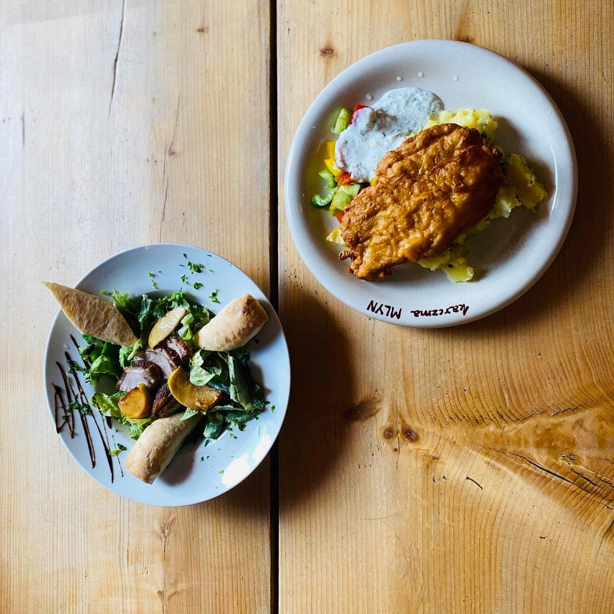

Kuracie prsia v syrovom cestíčku podľa @karczmamlyn — Normy Jedál
#dennemenu #kosice #ikosice #kacacieprsia #salat #healthyfood #kuracieprsiavsyrovomcesticku#tzatziky #rezen#yummy #yummyfood #foodporn #foodpornshare #instafood #dnesvarim #streda 🍃👀👩🍳🦆🐔🥬🥒🧀🍽😉